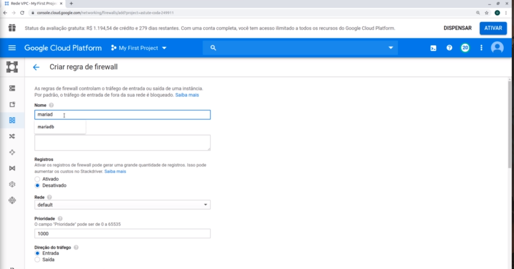

A ideia dessa API é separar completamente o back com front, diferente do projeto agenda, neste caso sera usado o mysql com o db, nesta aula é so para instalar todas as aplicações
Agora para é preciso ter acesso no servidor fora do sistema, para isso será preciso acessar o google plataform e seguir os passos:
Passo 1: Na maquina virtual, ira clicar nos 3 botoes e ir na opção Ver detalhes de rede.

Passo 2: e no canto esquedo irá na opção regra de firewall, e la será preciso
abrir a porta para da acesso.
E para abri-la sera preciso criar uma Criar regra de firewall
na Primelira opção é so colocar Mariadb, e em destinos tera q muidar para todas as
instancias na rede
e abaixo aparecerá a opção de colocar o ip destino.
e coilocará 0.0.0.0/0 assim será liberado para todas as redes.
Passo 3: E abaixo nas opções terá a opção Portas e
protocolos, e será selecionado a opção portas especificas, e será aq o local onde ira adicionar a
porta do db
é so selecionar a opção TCP e add a porta 3506,
ai depois é so criar a regra
Será usado o mysql pelo fato de ser muito parecido com mariadb.
Será usado o insomnia para fazer as requisiçoes de get push, delete no formulario.
pelo fato de nao ter views.
È so